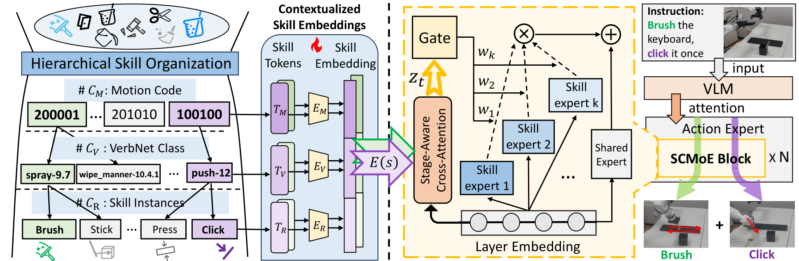
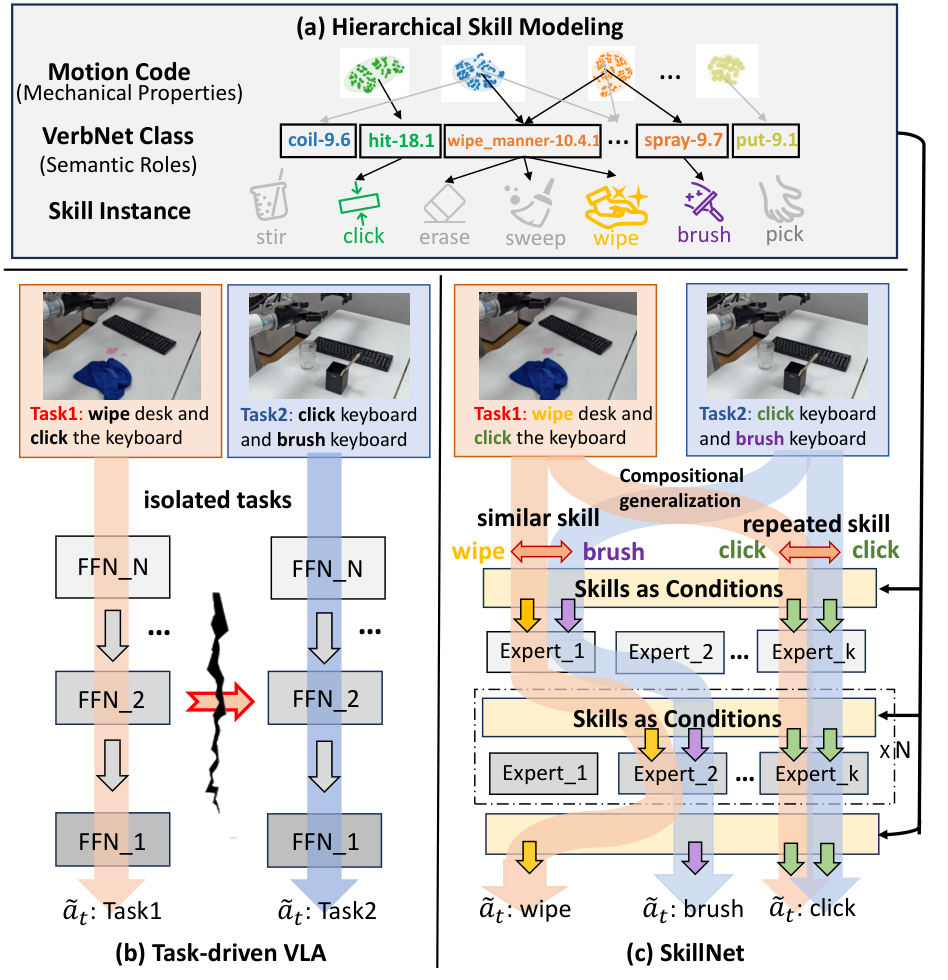
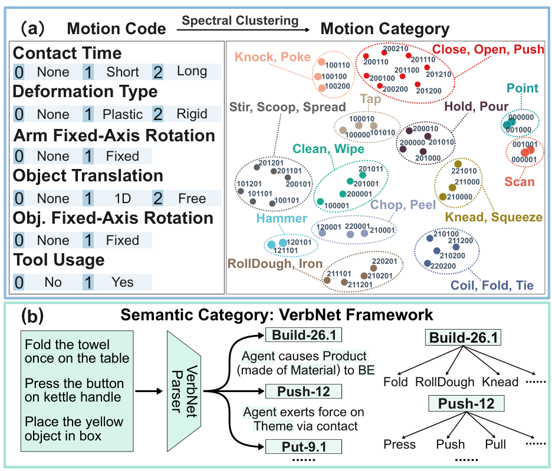

16.0%
Zero-Shot Compositional Transfer
SkillNet outperforms baseline VLAs on unseen task compositions in the proposed LIBERO-Skill benchmark.

Transfer across diverse task compositions and unseen behaviors remains a significant challenge for vision-language action (VLA) models. Skills are repeatable and atomic components for various tasks, and similarities shared with different skills provide evidence for transferability across behaviors. However, existing skill-centric methods often lack a hierarchy that captures similarities and differences across skills, and they lack a mechanism to express transferable skill attributes in a structured parametric space.
SkillNet models skill attributes in a hierarchical way and regulates compositional model structure with transferable skill attributes. It exploits motion code and the VerbNet Framework to model mechanical properties and semantic roles, then leverages skill-contextualized Mixture-of-Experts routing to enable similar expert activations for similar skills. On zero-shot and few-shot transfer experiments in simulators and real-world environments, SkillNet improves performance by 16.0% and 23.9%, while also achieving state-of-the-art in-domain performance.
SkillNet outperforms baseline VLAs on unseen task compositions in the proposed LIBERO-Skill benchmark.
Hierarchical skill attributes support rapid transfer from learned skills to previously unseen behaviors.
The skill-conditioned routing design remains beneficial under standard simulation and real-world settings.

Task-driven VLAs learn isolated task mappings. SkillNet instead treats long-horizon instructions as compositions of reusable skills, so repeated skills and similar skills can share behavior components across different task instances.
This overview motivates the core design: hierarchical skill modeling exposes transferable skill attributes, and skill-conditioned expert pathways turn those attributes into reusable model structure.

HSM builds a three-level skill hierarchy: motion categories capture mechanical properties such as contact, deformation, trajectory constraints, and tool usage; VerbNet classes summarize semantic roles and action relations; skill instances provide fine-grained realizations such as brush, click, wipe, push, and press.
This hierarchy converts free-form task descriptions into structured skill attributes. The attributes become learnable skill tokens and contextualized skill embeddings, giving the policy an explicit bridge between task language and reusable behavior components.
SCMoE uses hierarchical skill embeddings as soft routing conditions. A stage-aware cross-attention module produces task-relevant skill context, which guides the gate to activate shared experts and skill experts across MoE layers.
Similar skills therefore tend to induce similar expert activations, while different skills can still form distinct expert combinations. This gives the VLA model a compositional parametric space aligned with the skill hierarchy.
A real-robot demo slot reserved for transferring to an unseen behavior with a small number of demonstrations.
A real-robot demo slot reserved for a composed long-horizon manipulation task with repeated and similar skills.
@inproceedings{xie2026skillnet,
title={SkillNet: Hierarchical Skill Modeling for Compositional Generalization in Vision-Language Action Models},
author={Xie, Senwei and Zhang, Yuntian and Tan, Zhenzhou and Wang, Ruiping and Wang, Pengwei and Zhang, Shanghang and Chen, Xilin},
booktitle={Proceedings of the 43rd International Conference on Machine Learning},
year={2026}
}